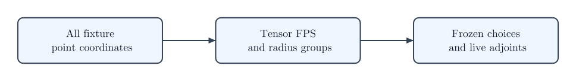
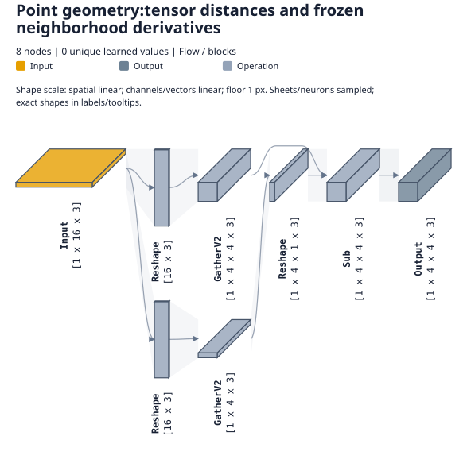
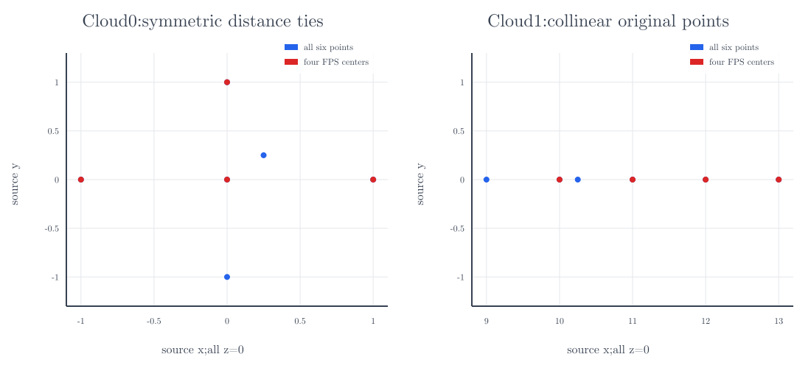
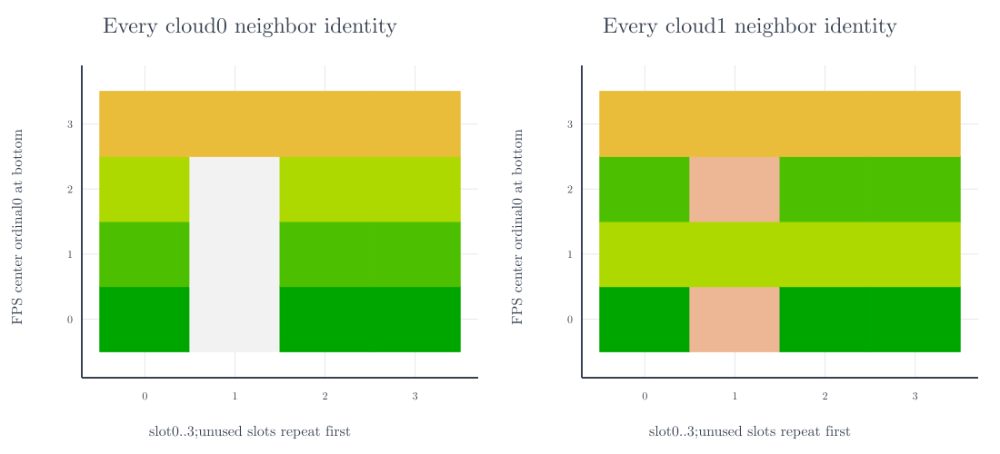
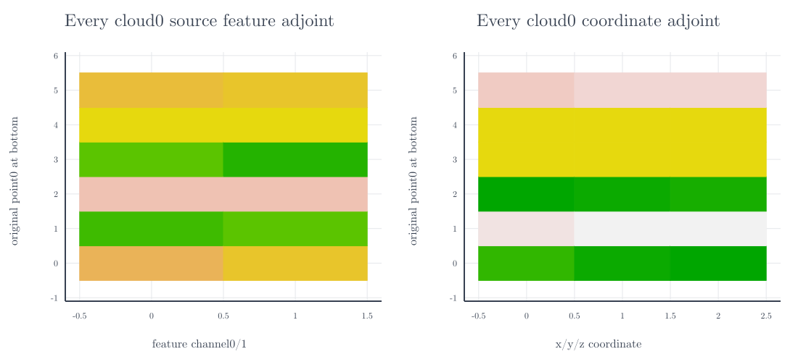
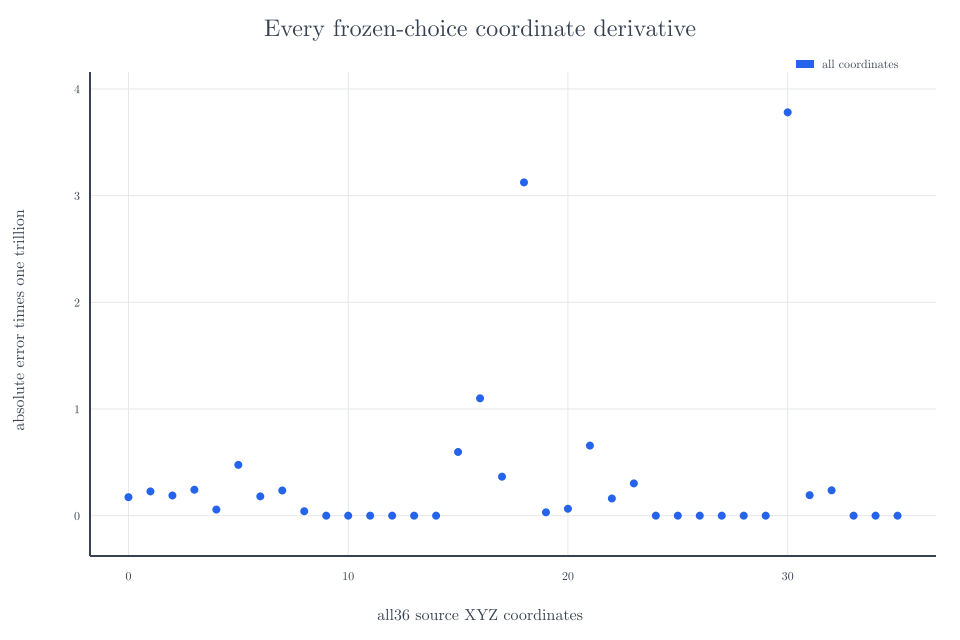

Point geometry:tensor distances and frozen neighborhood derivatives
Abstract
Deterministic farthest-point sampling and strict-radius groups prepare PointNet++ neighborhoods. Complete plotted fixtures,duplicate gather adjoints and all-coordinate checks make the discrete and differentiable behavior explicit.
Source example: examples/cpp/source/nn/1_convolutional_neural_networks/1.10_3d_and_video_convolutions/point_geometry.cpp.
The method
Compute distances and input-order ranking with tensors,retain categorical center/neighbor IDs,and differentiate through gathered features and centroid-relative coordinates with those choices frozen. Plot every declared fixture point and verify ties,padding,translation and explicit errors.
The concept diagram below is drawn by dm::graphics::Diagram. Its editable C++
source is the complete block below; regeneration uses the same datamunge toolchain
as the numerical examples. Exports consume the saved local SVG.
#include <dm/dm.hpp>
int main() {
std::filesystem::create_directories("build");
dm::graphics::Diagram diagram;
diagram.node("n0", {0.0, 0}, "All fixture\n point coordinates");
diagram.node("n1", {5.2, 0}, "Tensor FPS\n and radius groups");
diagram.node("n2", {10.4, 0}, "Frozen choices\n and live adjoints");
diagram.edge("n0", "n1").edge("n1", "n2");
diagram.save_svg("build/point_geometry_concept.svg");
}
Executed tensor architecture
This operator-only report traces centroid-relative gather/subtraction. Discrete FPS and radius decisions use fixed indices during the differentiable trace; there are no learned parameters.
This figure executes the inference configuration shown in the code, using a zero-valued shape probe without fitting or loading a checkpoint. Named stage boundaries group whole subgraphs where available; other nodes retain functional-layer detail. Exact batch-inclusive shapes and reachable parameter totals come from the trace. Shared linear scales map spatial dimensions and channel counts to blocks; the one-pixel visibility floor is disclosed in the legend. Labels use compact monospace text, rotate counterclockwise and sit beside their own glyphs. Arrows flow left to right; wide diagrams scroll at native size on the website.
#include <dm/dm.hpp>
int main() {
namespace n = dm::nn;
namespace m = n::models;
n::set_num_threads(2);
std::filesystem::create_directories("build");
n::Module architecture_model(
[&](const n::Tensor& image) { return m::PointGroup(image, 4, .5f, 4).relative; },
"Point geometry:tensor distances and frozen neighborhood derivatives");
n::ModelPlotOptions options;
options.style = n::ModelPlotStyle::Flow;
options.detail = n::ModelPlotDetail::Blocks;
options.labels = {.type = n::ModelPlotLabel::NameAndShape, .size = 12, .wrap = 24};
options.spacing = {.layer = 24, .lane = 12, .label = 8, .margin = 20};
options.sizing.spatial_size = 96;
options.sizing.channel_size = 42;
options.sizing.minimum_extent = 1;
options.opacity = .8;
const auto diagram = architecture_model.plot(n::zeros({1, 16, 3}), options);
diagram.save_svg("build/point_geometry_architecture.svg");
std::print(
"{} displayed nodes; {} reachable learned values.\n",
diagram.nodes().size(),
diagram.parameter_count());
}8 displayed nodes; 0 reachable learned values.

Plot every point in the declared geometry fixture
These two six-point clouds are the original hand-checkable source fixture, not measured CAD surfaces. Every z coordinate is zero,so the XY plots show all coordinates without projection loss. The first cloud tests symmetric distance ties;the second is collinear and translated. FPS starts with index0 and chooses the first maximum of distance to the nearest selected center. All numeric distance updates use tensors:Float32 source ingress,then Double squared distances. Output identities are detached integer metadata. There are no fitted parameters or optimizer in these supporting primitives.
#include <dm/dm.hpp>
int main() {
namespace n = dm::nn;
namespace m = n::models;
const auto xyz = n::tensor({0., 0., 0., 1., 0., 0., 0., 1., 0., -1., 0., 0.,
0., -1., 0., .25, .25, 0., 10., 0., 0., 11., 0., 0.,
13., 0., 0., 12., 0., 0., 10.25, 0., 0., 9., 0., 0.},
{2, 6, 3});
const auto ids = m::PointFps(xyz, 4);
const auto centers = m::PointGather(xyz, ids);
std::print("All original cloud coordinates {};FPS identities {}.\n", xyz, ids);
auto a = dm::graphics::RPlot::create(), b = dm::graphics::RPlot::create();
for (int row = 0; row < 2; ++row) {
const auto points = n::select(xyz, 0, row);
const auto selected = n::select(centers, 0, row);
auto &plot = row == 0 ? a : b;
plot.points(n::select(points, 1, 0).to_vector<double>(),
n::select(points, 1, 1).to_vector<double>(), "all six points", {37, 99, 235})
.points(n::select(selected, 1, 0).to_vector<double>(),
n::select(selected, 1, 1).to_vector<double>(), "four FPS centers",
{220, 38, 38})
.title(row == 0 ? "Cloud0:symmetric distance ties"
: "Cloud1:collinear original points")
.x_label("source x;all z=0")
.y_label("source y")
.y_limits(-1.3, 1.3);
}
auto layout = dm::graphics::RLayout::create(1, 2);
layout.add(a).add(b).size(1100, 500).fit_panels().save_svg("build/point_geometry_data.svg");
}All original cloud coordinates float32[2, 6, 3] [[[0, 0, 0], [1, 0, 0], [0, 1, 0], [-1, 0, 0], [0, -1, 0], [0.25, 0.25, 0]], [[10, 0, 0], [11, 0, 0], [13, 0, 0], [12, 0, 0], [10.25, 0, 0], [9, 0, 0]]];FPS identities int32[2, 4] [[0, 1, 2, 3], [0, 2, 1, 3]].

Strict-radius membership and first-hit padding
For each sampled center,retain the first four input-order points with squared distance strictly below1. The radius boundary is excluded. If fewer than four points qualify,repeat the first hit;counts exclude repeated padding and are capped at four. These are source policies,not nearest-distance ordering. An empty neighborhood throws rather than inventing an index.
The matrices below show every neighbor identity. Point0's neighbors are0,5 plus repeated0;points1/2 at distance exactly1 are excluded. Repeated slots are intentional and later receive duplicate gradient contributions.
#include <dm/dm.hpp>
int main() {
namespace n = dm::nn;
namespace m = n::models;
const auto xyz = n::tensor({0., 0., 0., 1., 0., 0., 0., 1., 0., -1., 0., 0.,
0., -1., 0., .25, .25, 0., 10., 0., 0., 11., 0., 0.,
13., 0., 0., 12., 0., 0., 10.25, 0., 0., 9., 0., 0.},
{2, 6, 3});
const auto fps = m::PointFps(xyz, 4);
const auto ball = m::PointBall(xyz, m::PointGather(xyz, fps), 1., 4);
std::print(
"| cloud | FPS centers | capped counts | all4x4neighbor IDs |\n|---:|---|---|---|\n");
for (int row = 0; row < 2; ++row)
std::print("| {} | {} | {} | {} |\n", row, n::select(fps, 0, row),
n::select(ball.counts, 0, row), n::select(ball.indices, 0, row));
auto a = n::plot_tensor_map(
n::reverse(n::select(ball.indices, 0, 0).to(n::DType::Float64), {0}), 0, 5),
b = n::plot_tensor_map(
n::reverse(n::select(ball.indices, 0, 1).to(n::DType::Float64), {0}), 0, 5);
a.title("Every cloud0 neighbor identity")
.x_label("slot0..3;unused slots repeat first")
.y_label("FPS center ordinal0 at bottom");
b.title("Every cloud1 neighbor identity")
.x_label("slot0..3;unused slots repeat first")
.y_label("FPS center ordinal0 at bottom");
auto layout = dm::graphics::RLayout::create(1, 2);
layout.add(a).add(b).size(1100, 500).fit_panels().save_svg(
"build/point_geometry_neighbors.svg");
}| cloud | FPS centers | capped counts | all4x4neighbor IDs |
|---|---|---|---|
| 0 | int32[4] [0, 1, 2, 3] | int32[4] [2, 2, 2, 1] | int32[4, 4] [[0, 5, 0, 0], [1, 5, 1, 1], [2, 5, 2, 2], [3, 3, 3, 3]] |
| 1 | int32[4] [0, 2, 1, 3] | int32[4] [2, 1, 2, 1] | int32[4, 4] [[0, 4, 0, 0], [2, 2, 2, 2], [1, 4, 1, 1], [3, 3, 3, 3]] |

Duplicate feature adjoints and centroid subtraction
PointGather uses tensor batch offsets and gather,so repeated identities scatter-add adjoints into the same source point. PointGroup freezes FPS/ball choices on detached XYZ,then gathers live XYZ and subtracts each live center. Thus the center receives the negative sum of its local-coordinate adjoints. No derivative is claimed through a change in discrete membership.
Use declared tensor feature values and signed coefficients to show all source adjoints. The XYZ objective is a signed linear function of local coordinates; its per-cloud translation adjoint sums to zero. Plot the first cloud's full 6x2 feature and6x3 coordinate adjoints,not selected favorable coordinates.
#include <dm/dm.hpp>
int main() {
namespace n = dm::nn;
namespace m = n::models;
const auto xyz = n::tensor({0., 0., 0., 1., 0., 0., 0., 1., 0., -1., 0., 0.,
0., -1., 0., .25, .25, 0., 10., 0., 0., 11., 0., 0.,
13., 0., 0., 12., 0., 0., 10.25, 0., 0., 9., 0., 0.},
{2, 6, 3});
auto x = xyz.clone();
x.requires_grad_(true);
auto features = n::arange(0, 24).reshape({2, 6, 2});
features.requires_grad_(true);
const auto grouped = m::PointGroup(x, 4, 1., 4);
const auto gathered = m::PointGather(features, grouped.indices);
const auto coefficients = (n::cos(n::arange(0, 64) * .31) * .1).reshape({2, 4, 4, 2});
const auto coordinate_coefficients =
(n::sin(n::arange(0, 96) * .29) * .1).reshape({2, 4, 4, 3});
const auto fg = n::grad(n::sum(gathered * coefficients), {features})[0];
const auto xg = n::grad(n::sum(grouped.relative * coordinate_coefficients), {x})[0];
const auto translation = n::max(n::abs(n::sum(xg, {1})));
if (translation.item() > 3e-7 || grouped.indices.requires_grad() ||
grouped.counts.requires_grad())
return 1;
std::print("All feature adjoints {};all XYZ adjoints {};maximum translation adjoint "
"{:.9g};discrete choices detached.\n",
fg, xg, translation.item());
auto a = n::plot_tensor_map(n::reverse(n::select(fg, 0, 0), {0}), -n::max(n::abs(fg)).item(),
n::max(n::abs(fg)).item()),
b = n::plot_tensor_map(n::reverse(n::select(xg, 0, 0), {0}), -n::max(n::abs(xg)).item(),
n::max(n::abs(xg)).item());
a.title("Every cloud0 source feature adjoint")
.x_label("feature channel0/1")
.y_label("original point0 at bottom");
b.title("Every cloud0 coordinate adjoint")
.x_label("x/y/z coordinate")
.y_label("original point0 at bottom");
auto layout = dm::graphics::RLayout::create(1, 2);
layout.add(a).add(b).size(1100, 500).fit_panels().save_svg(
"build/point_geometry_gradients.svg");
}All feature adjoints float32[2, 6, 2] [[[0.103961, 0.0409143], [-0.199019, -0.163182], [0.210097, 0.216592], [-0.152977, -0.227949], [0, 0], [0.057753, 0.0557333]], [[-0.000975884, 0.0652542], [-0.210576, -0.184606], [0.223947, 0.147867], [0.262751, 0.300429], [-0.141843, -0.113986], [0, 0]]];all XYZ adjoints float32[2, 6, 3] [[[-0.0764329, -0.0916803, -0.0992713], [0.0935053, 0.0997381, 0.0976416], [-0.0999712, -0.0964825, -0.0849364], [1.49012e-08, 7.45058e-09, 1.49012e-08], [0, 0, 0], [0.0828989, 0.0884247, 0.086566]], [[-0.0794366, -0.0587498, -0.0331566], [-0.0238818, 0.0048831, 0.0332404], [7.45058e-09, 0, 0], [0, 0, -1.49012e-08], [0.103318, 0.0538667, -8.37632e-05], [0, 0, 0]]];maximum translation adjoint 2.98023224e-08;discrete choices detached.

Frozen-choice derivatives, translation and explicit errors
Finite differences must hold discrete identities fixed:the declared fixture has radius-boundary points,so perturbing geometry and recomputing membership would evaluate a different piecewise function. Freeze FPS/neighbor IDs,then use Double tensor perturbations to check all36 XYZ coordinate derivatives. Native tests independently check all60feature/XYZ coordinates with literal host topology and repeat the comparison across108additional radius/slot settings. They also verify oversize padding beyondN and collapsed-cloud ties.
#include <dm/dm.hpp>
int main() {
namespace n = dm::nn;
namespace m = n::models;
const auto xyz = n::tensor({0., 0., 0., 1., 0., 0., 0., 1., 0., -1., 0., 0.,
0., -1., 0., .25, .25, 0., 10., 0., 0., 11., 0., 0.,
13., 0., 0., 12., 0., 0., 10.25, 0., 0., 9., 0., 0.},
{2, 6, 3});
const auto ids = m::PointFps(xyz, 4);
const auto ball = m::PointBall(xyz, m::PointGather(xyz, ids), 1., 4);
const auto coefficients =
(n::sin(n::arange(0, 96, 1, n::DType::Float64) * .29) * .1).reshape({2, 4, 4, 3});
auto objective = [&](const n::Tensor &x) {
return n::sum(
(m::PointGather(x, ball.indices) - n::expand_dims(m::PointGather(x, ids), 2)) *
coefficients);
};
auto x = xyz.to(n::DType::Float64);
x.requires_grad_(true);
const auto gradient = n::grad(objective(x), {x})[0].reshape({36});
std::vector<n::Tensor> errors;
for (int coordinate = 0; coordinate < 36; ++coordinate) {
const auto basis =
n::one_hot(n::full({1}, coordinate, n::DType::Int32), 36, 1., 0., n::DType::Float64)
.reshape({2, 6, 3});
const auto fd =
(objective(x.detach() + basis * 1e-5) - objective(x.detach() - basis * 1e-5)) / 2e-5;
errors.push_back(n::abs(fd - n::select(gradient, 0, coordinate)));
}
const auto error = n::stack(errors, 0);
const auto moved = m::PointGroup(xyz + 2., 4, 1., 4);
const auto original = m::PointGroup(xyz, 4, 1., 4);
if (n::max(error).item() > 1e-9 ||
!n::all(n::equal(moved.indices, original.indices)).item<bool>() ||
n::max(n::abs(moved.relative - original.relative)).item() != 0)
return 1;
int rejected = 0;
try {
m::PointBall(xyz, n::full({2, 1, 3}, 100.), .1, 4);
} catch (const std::invalid_argument &) {
++rejected;
}
try {
m::PointFps(n::zeros({2, 3, 3}), 4);
} catch (const std::invalid_argument &) {
++rejected;
}
if (rejected != 2 || n::sum(m::PointFps(n::zeros({2, 6, 3}), 4)).item() != 0)
return 1;
std::print("All36frozen-choice Double coordinate derivatives,max error {:.12g};exact "
"translation,collapsed seed ties and both declared invalid cases pass.\n",
n::max(error).item());
auto plot = dm::graphics::RPlot::create();
plot.points(n::arange(0, 36).to_vector<double>(), (error * 1e12).to_vector<double>(),
"all coordinates", {37, 99, 235})
.title("Every frozen-choice coordinate derivative")
.x_label("all36 source XYZ coordinates")
.y_label("absolute error times one trillion");
plot.save_svg("build/point_geometry_checks.svg");
}All36frozen-choice Double coordinate derivatives,max error 3.78075348806e-12;exact translation,collapsed seed ties and both declared invalid cases pass.

Verification and limits
Four native tests execute the original complete fixture,compare every FPS, radius count/index and gathered value with retained independent host source across12three-batch clouds and nine radius/slot combinations,and check exact duplicate scatter,detached choices and invalid inputs. Public examples, standalone inclusion,the original program and documentation hovers pass. These supporting operations do not train or validate a classifier. Their frozen-choice derivatives apply within a fixed discrete neighborhood,not through selection discontinuities. Mesh-based model reports remain separate.
Regenerate adjacent views from this run
Conclusion
Tensor geometry preserves the source neighborhood policy while gather/subtraction retain useful gradients. Complete fixtures and independent host checks establish these primitive contracts without a fitted classifier or benchmark claim.
References
- [Qi et al.(2017),PointNet++:Deep Hierarchical Feature Learning on Point Sets in a Metric Space](https://arxiv.org/abs/1706.02413).